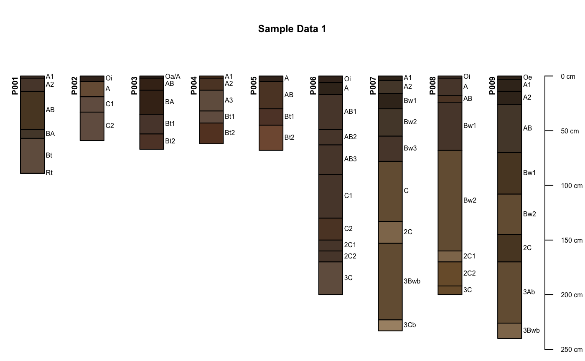
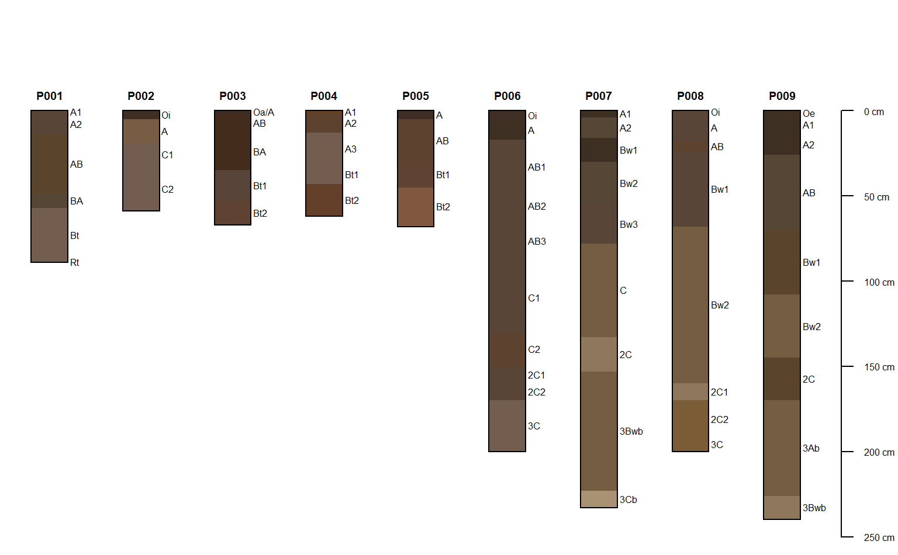
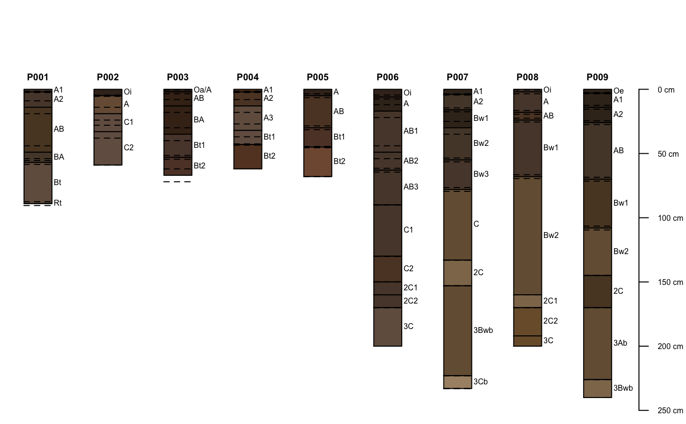
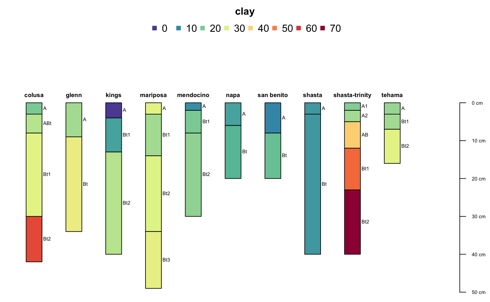
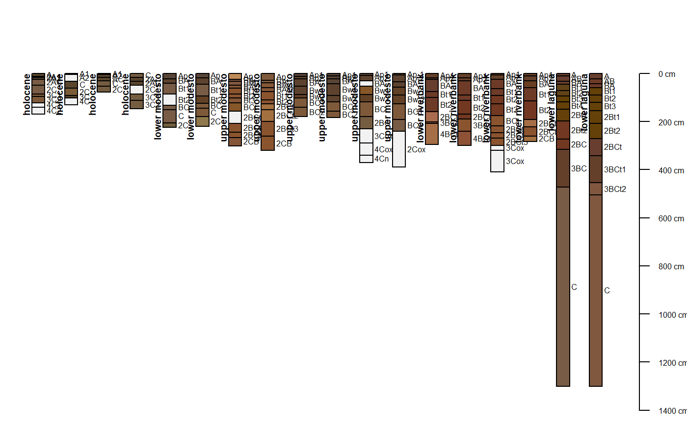
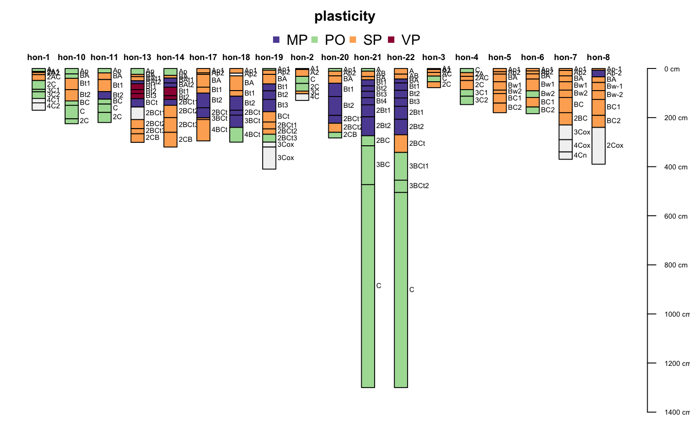
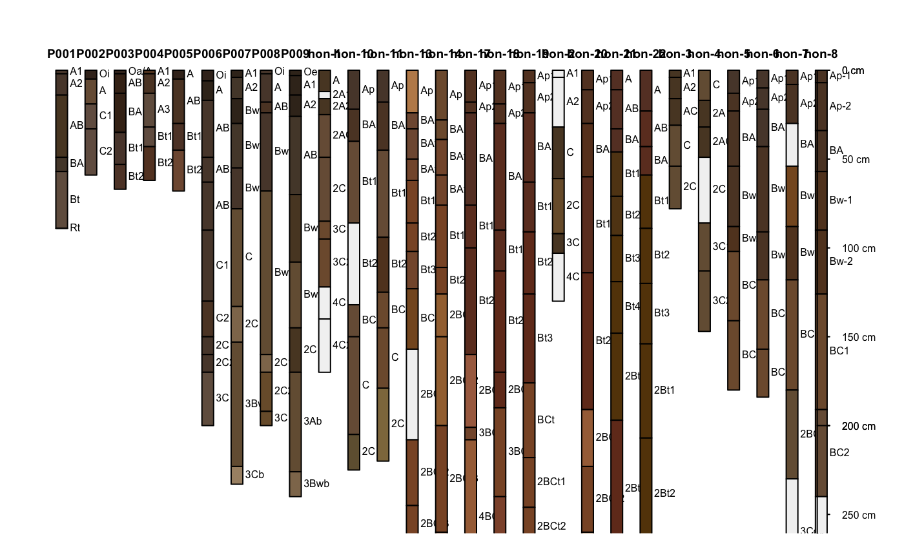
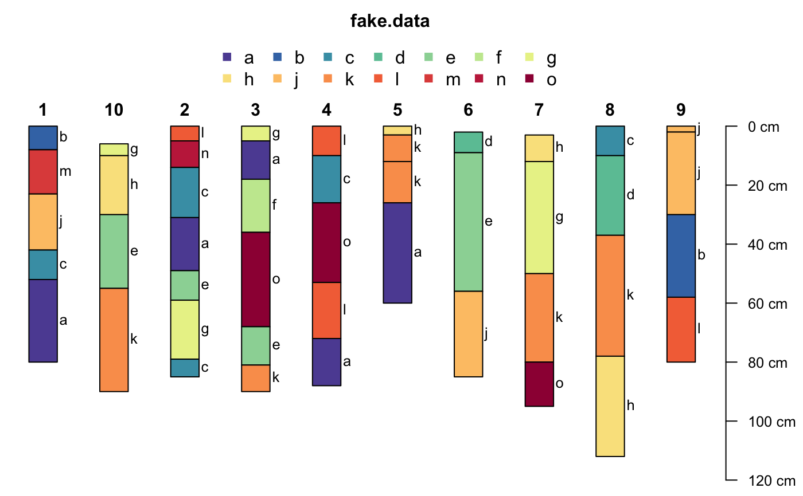
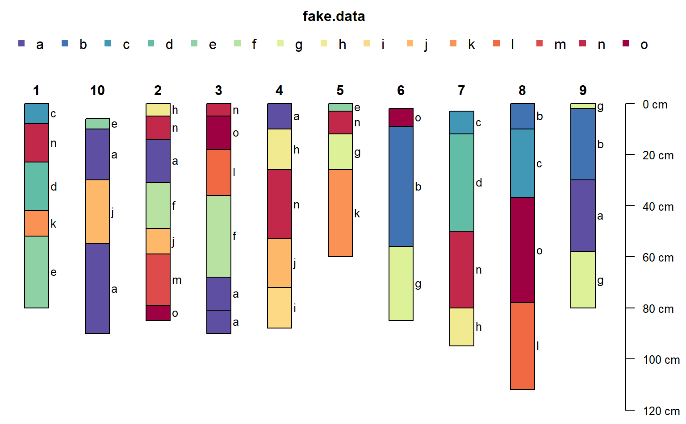

SPC-plotting.RdGenerate a simple diagram of a soil profile, with annotated horizon names.
plotSPC(x, color='soil_color', width=0.2, name=NULL, label=idname(x), alt.label=NULL, alt.label.col='black', cex.names=0.5, cex.depth.axis=cex.names, cex.id=cex.names+(0.2*cex.names), font.id=2, print.id=TRUE, id.style='auto', plot.order=1:length(x), relative.pos=1:length(x), add=FALSE, scaling.factor=1, y.offset=0, x.idx.offset=0, n=length(x), max.depth=ifelse(is.infinite(max(x)), 200, max(x)), n.depth.ticks=5, shrink=FALSE, shrink.cutoff=3, abbr=FALSE, abbr.cutoff=5, divide.hz=TRUE, hz.distinctness.offset=NULL, hz.distinctness.offset.col='black', hz.distinctness.offset.lty=2, axis.line.offset=-2.5, plot.depth.axis=TRUE, density=NULL, col.label=color, col.palette = rev(brewer.pal(10, 'Spectral')), col.legend.cex=1, n.legend=8, lwd=1, lty=1, default.color=grey(0.95), ...)
| x | a SoilProfileCollection object |
|---|---|
| color | the name of the column containing R-compatible color descriptions, or a column containing numeric or categorical data; see details |
| width | scaling of profile widths |
| name | the name of the (horizon-level) attribute containing horizon designation labels |
| label | the name of the (site-level) attribute used to identify profiles in the plot |
| alt.label | the name of a (site-level) attribute used for seconary annotation |
| alt.label.col | color used when printing secondary annotation |
| cex.names | character scaling applied to horizon names |
| cex.depth.axis | character scaling applied to depth scale |
| cex.id | character scaling applied to profile id |
| font.id | font style applied to profile id, default is 2 (bold) |
| print.id | should the profile id be printed above each profile? (TRUE) |
| id.style | profile ID printing style: 'auto' (default) = simple heuristic used to select from: 'top' = centered above each profile, 'side' = 'along the top-left edge of profiles' |
| plot.order | a vector describing the order in which individual SoilProfile objects from the parent should be plotted |
| relative.pos | a vector of relative positions along the x-axis, within {1, n}, ignores |
| add | add to an existing figure |
| scaling.factor | vertical scaling of the profile heights |
| y.offset | vertical offset for top of profiles |
| x.idx.offset | integer specifying horizontal offset from 0 |
| n | integer describing amount of space along x-axis to allocate, defaults to length(x) |
| max.depth | suggested lower depth boundary of plot |
| n.depth.ticks | suggested number of ticks in depth scale |
| shrink | should long horizon names be shrunk by 80% ? |
| shrink.cutoff | character length defining long horizon names |
| abbr | should the profile ID be abbreviated? |
| abbr.cutoff | suggested minimum length for abbreviated IDs |
| divide.hz | should horizons be divided with a thin black line? (default is TRUE) |
| hz.distinctness.offset | column name containing vertical offsets used to depict horizon boundary distinctness (same units as profiles) |
| hz.distinctness.offset.col | color used to encode horizon distinctness (default is 'black') |
| hz.distinctness.offset.lty | line style used to encode horizon distinctness (default is 2) |
| axis.line.offset | horizonatal offset applied to depth axis (default is -2.5) |
| plot.depth.axis | plot depth axis? (default is TRUE) |
| density | fill density used for horizon color shading, either a single integer or a column name containing integer values (default is NULL, no shading) |
| col.label | text printed above the color-coded legend |
| col.palette | color palette used to plot numeric data |
| col.legend.cex | scaling of color legend |
| n.legend | approximate number of classes used in numeric legend, max number of items per row in categorical legend |
| lwd | single numeric value: line width multiplier |
| lty | single integer: line style |
| default.color | default horizon fill color used when `color` attribute is NA |
| ... | other arguments passed into lower level plotting functions |
signature(x = "SoilProfileCollection")Depth limits (max.depth) and number of depth ticks (n.depth.ticks) are *suggestions* to the pretty function. You may have to tinker with both parameters to get what you want.
The 'side' id.style is useful when plotting a large collection of profiles, and/or, when profile IDs are long.
If the column containing horizon designations is not specified (the name argument), a column (presumed to contain horizon designation labels) is guessed based on regular expression matching of the pattern 'name'-- this usually works, but it is best to manual specify the name of the column containing horizon designations.
The color argument can either name a column containing R-compatible colors, possibly created via munsell2rgb, or column containing either numeric or categorical (either factor or character) values. In the second case, values are converted into colors and displayed along with a simple legend above the plot. Note that this functionality makes several assumptions about plot geometry and is most useful in an interactive setting.
Adjustments to the legend can be specified via col.label (legend title), col.palette (palette of colors, automatically expanded), col.legend.cex (legend scaling), and n.legend (approximate number of classes for numeric variables, or, maximum number of legend items per row for categorical variables). Currently, plotSPC will only generate two rows of legend items. Consider reducing the number of classes if two rows isn't enough room.
Profile sketches can be added according to relative positions along the x-axis (vs. integer sequence) via relative.pos argument. This should be a vector of positions within {1,n} that are used for horizontal placement. Default values are 1:length(x). Care must be taken when both plot.order and relative.pos are used simultaneously: relative.pos specifies horizontal placement after sorting. addDiagnosticBracket and addVolumeFraction use the relative.pos values for subsequent annotation.
Relative positions that are too close will result in overplotting of sketches. Adjustments to relative positions such that overlap is minimized can be performed with fixOverlap(pos), where pos is the original vector of relative positions.
The x.idx.offset argument can be used to shift a collection of pedons from left to right in the figure. This can be useful when plotting several different SoilProfileCollection objects within the same figure. Space must be pre-allocated in the first plotting call, with an offset specified in the second call. See examples below.
A new plot of soil profiles is generated, or optionally added to an existing plot.
http://casoilresource.lawr.ucdavis.edu/
fixOverlap, explainPlotSPC, SoilProfileCollection-class, pretty, hzDistinctnessCodeToOffset, addBracket, profileGroupLabels
data(sp1) # usually best to adjust margins par(mar=c(0,0,3,0)) # add color vector sp1$soil_color <- with(sp1, munsell2rgb(hue, value, chroma)) # promote to SoilProfileCollection depths(sp1) <- id ~ top + bottom # plot profiles plot(sp1, id.style='side')#># plot profiles without horizon-line divisions plot(sp1, divide.hz=FALSE)#># add dashed lines illustrating horizon boundary distinctness sp1$hzD <- hzDistinctnessCodeToOffset(sp1$bound_distinct) plot(sp1, hz.distinctness.offset='hzD')#># plot horizon color according to some property data(sp4) depths(sp4) <- id ~ top + bottom plot(sp4, color='clay')#># another example data(sp2) depths(sp2) <- id ~ top + bottom site(sp2) <- ~ surface # label with site-level attribute: `surface` plot(sp2, label='surface', plot.order=order(sp2$surface))#># example using a categorical attribute plot(sp2, color = "plasticity")#># plot two SPC objects in the same figure par(mar=c(1,1,1,1)) # plot the first SPC object and # allocate space for the second SPC object plot(sp1, n=length(sp1) + length(sp2))#># plot the second SPC, starting from the first empty space plot(sp2, x.idx.offset=length(sp1), add=TRUE)#>## ## demonstrate adaptive legend ## data(sp3) depths(sp3) <- id ~ top + bottom # make some fake categorical data horizons(sp3)$fake.data <- sample(letters[1:15], size = nrow(sp3), replace=TRUE) # better margins par(mar=c(0,0,3,1)) # note that there are enough colors for 15 classes (vs. previous limit of 10) # note that the legend is split into 2 rows when length(classes) > n.legend argument plot(sp3, color='fake.data', name='fake.data', cex.names=0.8)# make enough room in a single legend row plot(sp3, color='fake.data', name='fake.data', cex.names=0.8, n.legend=15)